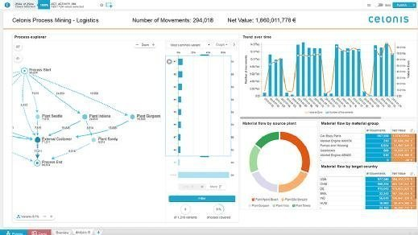
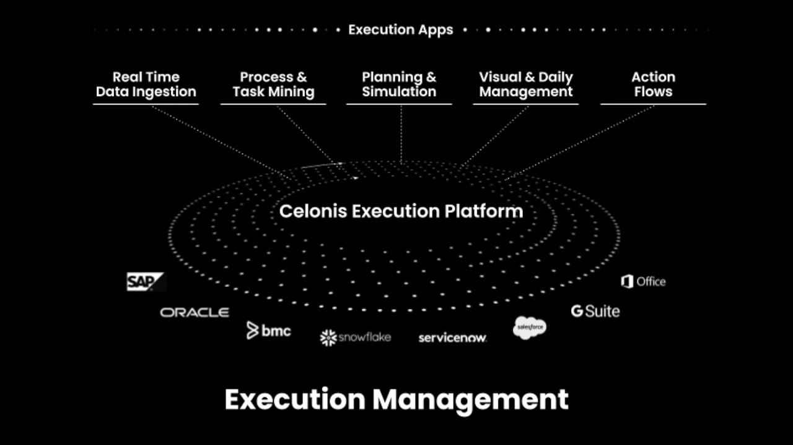
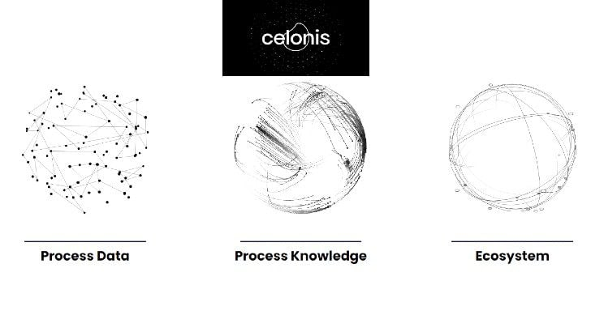

KI-Champion aus München: Celonis ist weltweit führend in Process Mining und Execution Management. Mit Innovationen für Prozessoptimierung, KI-gestützte Analysen und nachhaltige Transformationen gestaltet Celonis die Zukunft der Unternehmensprozesse.

PM
Process Mining
KI-basierte Analyse von Geschäftsprozessen für Transparenz und Optimierungspotenziale.
KernkompetenzProzessanalyse
TechnologienDatenextraktion, Simulation
InnovationCelonis EMS

EM
Execution Management
Plattform für Echtzeit-Prozesssteuerung und automatisierte Verbesserungen.
WeltmarktführerProzessintelligenz
EinsatzFinanz, Fertigung, Logistik
TechnikKI-Integration SAP, Microsoft

PI
Process Intelligence
Vernetzte Prozesse mit Graph-Technologie, KI und IoT für smarte Entscheidungen.
LösungenProcess Intelligence Platform
EffizienzAutomatisierte Optimierungen
ZukunftNachhaltige AI-Transformation
Unternehmensgröße & Erfolge
Celonis ist ein globales Tech-Unternehmen, das über 750 Mio. USD Umsatz erzielt und in mehr als 17 Ländern aktiv ist.
3.000+
Mitarbeiter weltweit
17+
Länder mit Aktivitäten
750
Mio. USD Umsatz 2025
5.000+
Enterprise-Kunden
Innovation & Zukunft
Celonis investiert stark in KI und Prozessintelligenz, um Unternehmen effizienter und nachhaltiger zu machen.
Process Intelligence Graph
Execution Management System
KI-gestützte Simulationen
Echtzeit-Datenstreaming
Nachhaltige Prozesse
Automatisierte Transformationen
Meilensteine von Celonis
2011
Gründung als Spin-off der TU München durch Alex Rinke, Bastian Nominacher und Martin Klenk – Start der Process-Mining-Revolution.
2012
Eintritt ins SAP Startup Focus Program; erste Partnerschaft für Analytics auf SAP HANA.
2015
Reseller-Abkommen mit SAP; Celonis-Software als "Celonis Process Mining by SAP"vermarktet.
2018
Series B-Finanzierung mit 50 Mio. USD; Unicorn-Status bei 1 Mrd. USD Valuation.
2019
Series C mit 290 Mio. USD; Übernahme von Banyas für Echtzeit-Konnektivität zu SAP.
2020
Launch des Execution Management Systems (EMS); Akquisitionen von Integromat (Make) und Lenses.io für Integration und Streaming.
2021
Decacorn-Status bei 11 Mrd. USD Valuation; Expansion in Nordics.
2022
Series D-Erweiterung mit 400 Mio. USD (Qatar Investment Authority); Valuation auf 13 Mrd. USD; Akquisition von PAF und neuer Hub in Madrid.
2023
Einführung der Process Intelligence Graph für verbundene Prozessanalyse.
2024
Launch der Process Intelligence Platform; Leader im Gartner Magic Quadrant für Process Mining.
2025
No. 3 auf Fortune Future 50; Fokus auf AI-Nachhaltigkeit; über 6,5 Mrd. USD Wertschöpfung für Kunden; 3.000+ Mitarbeiter weltweit.